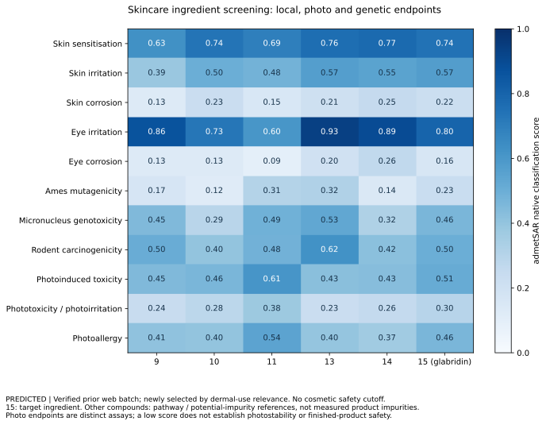
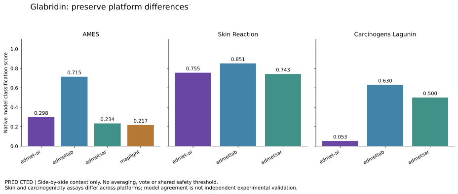
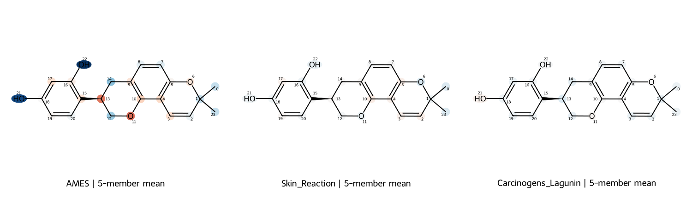
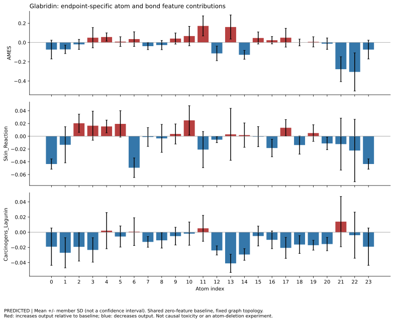
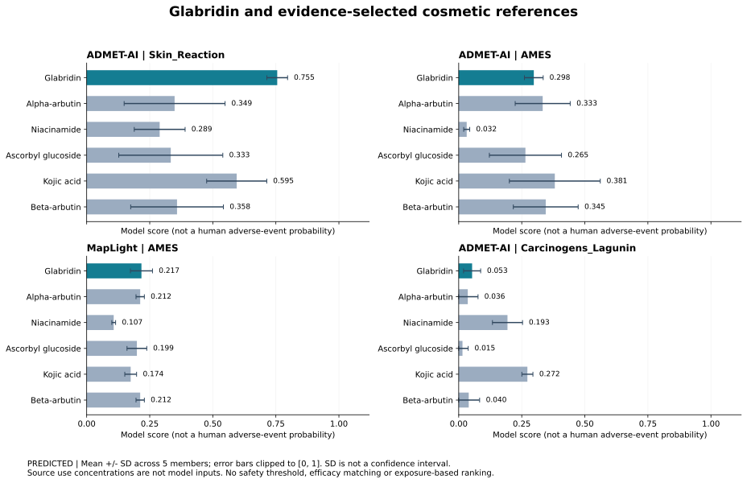
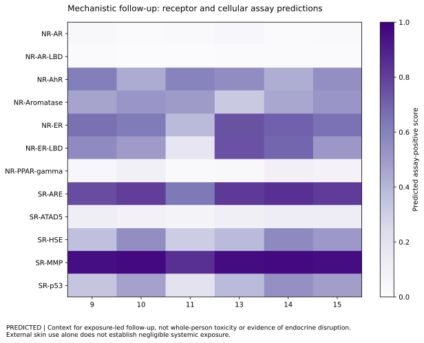

Titer yield and productivity
No G1 versus LLPS measurements are present.
Can programmable microbial production improve glabridin manufacturing efficiency while avoiding new resource, environmental, safety and social burdens?
The analysis uses G1, low-expression OC/DMT without LLPS, as the baseline and the same OC/DMT background with LLPS as the main comparison. Host, medium, initial OD600, precursor concentration, temperature, RPM and fermentation conditions must be matched. Normal-expression constructs are references; optimization constructs do not replace the primary comparison.

The intervention log separates documented concerns from planned validation. No stakeholder quotation is included without a traceable source.

| Stakeholder | Concern | Metric | Project change | Validation |
|---|---|---|---|---|
| Consumer / NUS | efficacy safety price purification process control transparency and pigmentation-related needs | purity safety evidence efficacy evidence cost per gram process stability and evidence provenance | Reframed application toward stakeholder-defined skin-health needs and expanded success criteria beyond titer | Awaiting return with measured evidence |
| Industry / fermentation | purity safety efficacy cost supply stability and complete data package | purity recovery productivity cost per gram batch CV and safety test status | Added quality economics reproducibility and input-output records to the analysis plan | Awaiting return with measured evidence |
| Academic / technical | LLPS mechanism matched controls pathway explanation and evidence robustness | LLPS quantification matched No-LLPS versus LLPS metabolite time series and DMT activity | Separated mechanistic evidence from sustainability outcomes and added matched controls | Awaiting experimental validation |
| Sustainability / process expert | functional unit system boundary resource indicators and practical significance | functional unit PMI water solvent waste and process energy | Working functional unit set to 1 g purified glabridin pending expert review | Awaiting first consultation |
Compounds 9, 10, 11, 13, 14 and 15 were mapped to the 2026 pathway article, cached from PubChem and re-parsed with RDKit. Formula, molecular weight and InChIKey are checked independently. This does not replace authentic analytical standards.

| Compound ID | Name | Formula | RDKit MW | InChIKey | Audit |
|---|---|---|---|---|---|
| 9 | vestitol | C16H16O4 | 272.3000 | XRVFNNUXNVWYTI-UHFFFAOYSA-N | PASS |
| 10 | 4'-O-methylpreglabridin | C21H24O4 | 340.4190 | CFIGHBKJMKQTBW-UHFFFAOYSA-N | PASS |
| 11 | 4'-O-methylglabridin | C21H22O4 | 338.4030 | ZZAIPFIGEGQNHP-AWEZNQCLSA-N | PASS |
| 13 | demethylvestitol | C15H14O4 | 258.2730 | CJZBXHPHEBCWLV-UHFFFAOYSA-N | PASS |
| 14 | preglabridin | C20H22O4 | 326.3920 | HJYNNFAPXVIBTD-CQSZACIVSA-N | PASS |
| 15 | glabridin | C20H20O4 | 324.3760 | LBQIJVLKGVZRIW-ZDUSSCGKSA-N | PASS |
光甘草定（15）是目标原料；其余五个通路化合物作为前体及潜在杂质参照。当前暂按非喷雾、留敷型面部护肤品组织证据，具体产品类型、浓度和配方仍待提供。分子预测不能代替成品评价。
口服吸收、生物利用度、肠道/人工膜通透性、血脑屏障、药物代谢酶、药代清除等退出常规任务；DILI、hERG 和口服 LD50 不再作为本轮主要模型。以往结果保留为历史记录。后续若产品为喷雾、唇部或眼周用途，需要相应调整暴露范围。
| 平台 | 当前选定记录数 | 执行来源 | 证据范围 |
|---|---|---|---|
| ADMET-AI | 102 | FRESH_CHECKPOINT_INFERENCE | PREDICTED; ingredient screening only |
| admetSAR | 114 | SELECTED_FROM_VERIFIED_PRIOR_RUN | PREDICTED; ingredient screening only |
| ADMETlab | 54 | SELECTED_FROM_VERIFIED_PRIOR_RUN | PREDICTED; ingredient screening only |
| MapLight | 6 | FRESH_AMES_TRAINING | PREDICTED; ingredient screening only |
| ProTox | 18 | SELECTED_FROM_VERIFIED_PRIOR_RUN | PREDICTED; ingredient screening only |
| VEGA | 60 | SELECTED_FROM_VERIFIED_PRIOR_RUN | PREDICTED; ingredient screening only |
| EPA EPI Suite | 54 | SELECTED_FROM_VERIFIED_PRIOR_RUN | ENVIRONMENT; native domain flags retained |
| ECOSAR | 118 | SELECTED_FROM_VERIFIED_PRIOR_RUN | ENVIRONMENT; native domain flags retained |
ADMET-AI 重新推理并提取 17 个相关任务：3 个主要危害、2 个配方性质、12 个机理信号。官方多任务网络共用前向计算，未使用的输出不进入当前分析。Chemprop 重新解释 AMES、Skin_Reaction 和 Carcinogens_Lagunin；MapLight 仅重新训练 AMES 的五个成员。网页模型与 VEGA/EPA 使用已核实的既有结果，未将读取缓存表述为重新运行。


| 平台 | 终点 | 原生结果 | 成员差异 / 原生类别置信度 | 适用性信息 |
|---|---|---|---|---|
| ADMET-AI | Mutagenicity | 0.2978 | 0.037160594 | NOT_FORMALLY_ESTABLISHED |
| ADMET-AI | Carcinogenicity | 0.0532 | 0.033896066 | NOT_FORMALLY_ESTABLISHED |
| ADMET-AI | Skin Reaction | 0.7554 | 0.041052856 | NOT_FORMALLY_ESTABLISHED |
| admetSAR | Skin sensitisation | 0.7428 | NOT_EXPORTED | |
| admetSAR | Skin irritation | 0.5713 | NOT_EXPORTED | |
| admetSAR | Skin corrosion | 0.2194 | NOT_EXPORTED | |
| admetSAR | Eye irritation | 0.7971 | NOT_EXPORTED | |
| admetSAR | Eye corrosion | 0.1608 | NOT_EXPORTED | |
| admetSAR | Ames mutagenicity | 0.2341 | NOT_EXPORTED | |
| admetSAR | Micronucleus genotoxicity | 0.4627 | NOT_EXPORTED | |
| admetSAR | Rodent carcinogenicity | 0.4999 | NOT_EXPORTED | |
| admetSAR | Photoinduced toxicity | 0.5094 | NOT_EXPORTED | |
| admetSAR | Phototoxicity / photoirritation | 0.2963 | NOT_EXPORTED | |
| admetSAR | Photoallergy | 0.4611 | NOT_EXPORTED | |
| ADMETlab | Skin sensitisation | 0.8514 | NOT_EXPORTED | |
| ADMETlab | Ames mutagenicity | 0.7146 | NOT_EXPORTED | |
| ADMETlab | Genotoxicity | 0.7752 | NOT_EXPORTED | |
| ADMETlab | Carcinogenicity | 0.6303 | NOT_EXPORTED | |
| ADMETlab | Eye corrosion | 0.0146 | NOT_EXPORTED | |
| ADMETlab | Eye irritation | 0.9833 | NOT_EXPORTED | |
| MapLight | Ames mutagenicity | 0.2172 | 0.0437592836066599 | NOT_FORMALLY_ESTABLISHED |
| ProTox | Carcinogenicity | Inactive | 0.67 | NOT_EXPORTED |
| ProTox | Mutagenicity | Inactive | 0.67 | NOT_EXPORTED |
| VEGA | MUTA_CAESAR | NON-Mutagenic (LOW reliability) | 0.693; LOW reliability; MW warning=False | |
| VEGA | SKIN_CAESAR | Sensitizer (MODERATE reliability) | 0.636; MODERATE reliability; MW warning=False |


官方无 GNN 指纹/描述符 + CatBoost 方法，五个随机种子。固定测试集未参与训练、选阈值或调参。当前不再运行 DILI/hERG，也没有把尚未运行的 GNN 扩展记作完成。
| 种子 | 训练行数 | 测试行数 | ROC-AUC | AP | Brier |
|---|---|---|---|---|---|
| 1 | 5821 | 1457 | 0.8681 | 0.9063 | 0.1437 |
| 2 | 5821 | 1457 | 0.8678 | 0.9040 | 0.1433 |
| 3 | 5821 | 1457 | 0.8651 | 0.9007 | 0.1447 |
| 4 | 5821 | 1457 | 0.8651 | 0.9044 | 0.1454 |
| 5 | 5821 | 1457 | 0.8670 | 0.9029 | 0.1438 |
参照名单在本轮预测前固定：α-熊果苷、烟酰胺为主要用途参照；抗坏血酸葡糖苷补充抗氧化/调理用途；曲酸保留使用条件；β-熊果苷扩展立体异构体比较。它们都不是所有终点阴性的标准品。
| 参照成分 | 角色 | 证据与使用条件 |
|---|---|---|
| α-熊果苷 | PRIMARY_FUNCTIONAL_REFERENCE | SCCS 支持面霜不超过 2%、身体乳不超过 0.5% 的指定用途；需控制氢醌痕量。 |
| 烟酰胺 | PRIMARY_FUNCTIONAL_REFERENCE | CIR 2005 支持所评估的化妆品用法；报告包含最高 5% 的人体刺激性试验。2% 和 5% 的色素研究提供用途参照，均不是通用安全上限。 |
| 抗坏血酸葡糖苷 | SUPPORTING_ANTIOXIDANT_SKIN_CONDITIONING_REFERENCE | CIR 支持报告所述用法和浓度；非喷雾面颈产品报告用量最高 5%。该评估未覆盖以皮肤脱色为目的的使用。 |
| 曲酸 | CONDITIONAL_FUNCTIONAL_REFERENCE | SCCS 最终意见支持不超过 1% 的指定美白用途；EU 2024/996 限面部和手部产品。皮肤屏障受损或去角质场景需额外关注。 |
| β-熊果苷 | EXTENDED_FUNCTIONAL_STEREOISOMER_REFERENCE | SCCS 支持面霜不超过 7% 的指定用途，并要求控制氢醌痕量；不能把 α/β 两者当作独立安全证据票数。 |
浓度来自特定评估或试验，未输入结构预测模型，也不能作为光甘草定的安全浓度。CIR 报告用量不等于法规上限。抗坏血酸葡糖苷的 CIR 结论不覆盖脱色用途。完整来源与条件见下方报告。

新推理使用既有检查点：ADMET-AI 提取 17 项任务，MapLight 预测 AMES。原光甘草定输出复现一致。烟酰胺出现在 MapLight 训练集，曲酸出现在其固定测试集；ADMET-AI 训练成员身份未核查。这组参照不能作为新的独立验证集。参照组眼刺激和光毒性预测仍缺失。
当前没有经护肤品数据校准的“低风险”阈值。0.5 只能作为模型分类分界，不是产品安全线。没有将 DrugBank 已批准药物分布当作无毒对照，也未把皮肤致敏分数等同于皮肤刺激或经皮吸收。六个通路分子之间的比较不能证明最终配方安全；已知阳性/阴性对照组和外部校准仍待补充。
重复给药、生殖毒性和内分泌相关信号保留为后续评估线索。它们尚未构成经皮暴露评估或人体效应证据；需要实际配方、浓度和经皮吸收信息。

护肤品使用后进入污水及生产排放仍与可持续性有关。VEGA、EPI Suite 和 ECOSAR 保留原生单位、适用域和警告。环境危害与真实环境风险之间仍缺排放和暴露数据。


| 评价项目 | 状态 | 缺口 |
|---|---|---|
| Dermal absorption | WAITING_FOR_DATA | No measured skin absorption or validated formulation-specific model; Caco-2/PAMPA are not skin substitutes. |
| Concentration and use | WAITING_FOR_DATA | Final concentration, applied amount, frequency, area, rinse/leave-on and target population are needed. |
| Formulation and local tolerance | WAITING_FOR_DATA | Ingredient QSAR cannot validate finished-product irritation, sensitisation or ocular tolerance. |
| Photo safety | PARTIAL | admetSAR photo scores available; UV/visible spectrum, photostability and formulation testing are absent. |
| Systemic safety margin | WAITING_FOR_DATA | No systemic exposure dose or suitable point of departure; repeated-dose, reproductive and endocrine concerns are not waived. |
| Purity and residuals | WAITING_FOR_DATA | Pathway compounds are comparison candidates, not measured impurities; quantify purity, residual solvents and contaminants. |
| Model calibration and controls | WAITING_FOR_DATA | No cosmetic-specific calibrated cutoff or independent positive/negative control panel. DrugBank is not a safe control set. |
| Finished-product quality | WAITING_FOR_DATA | Stability, preservation/microbial quality and packaging compatibility need formulation evidence. |
| Benefit / efficacy | OUTSIDE_SAFETY_SCREEN | No whitening, efficacy or skin-benefit claim is inferred from toxicity predictions. |
范围参考 SCCS 化妆品原料评价指南第 12 版。这是科学范围依据，不是特定市场的法规合规结论。
Five nested candidate panels cover 16.67%, 33.33%, 50%, 83.33% and 100% of the six compounds in the project manifest. These are SCENARIO design calculations, not measured analytical performance. The denominator is this six-compound reference set, not the entire biosynthetic pathway.
| Planned compound IDs | Analytes | Coverage (%) | Unmeasured IDs | Evidence |
|---|---|---|---|---|
| 15 | 1 | 16.67 | 9;10;11;13;14 | SCENARIO |
| 11;15 | 2 | 33.33 | 9;10;13;14 | SCENARIO |
| 10;11;15 | 3 | 50.0 | 9;13;14 | SCENARIO |
| 9;10;11;14;15 | 5 | 83.33 | 13 | SCENARIO |
| 9;10;11;13;14;15 | 6 | 100.0 | SCENARIO |

Next validation: verify reaction-level provenance; confirm authentic standards and limits of detection; quantify extraction recovery and assay cost; then compare panel discrimination using a justified dynamic model or matched measurements. Sampling times and solvent choice require separate validation.
Required measurements include raw biological replicates for OD600, compounds 9/10/11/13/14/15, precursor consumption, glabridin titer, purity and recovery. The primary result must show raw points, summary estimates, uncertainty and the stated statistical method.
No G1 versus LLPS measurements are present.
The repository provides the exact input template, including compound 13 and OD600.
Fitting is disabled until real replicate time series are supplied.
CFU before and after approved inactivation is required.
The working functional unit is 1 g purified glabridin. Templates capture actual materials, water, solvents, equipment time, power provenance, recovery, purity and price. No PMI, energy intensity or cost result is reported before product mass and batch inventories exist.


python -m venv .venv
.venv/bin/pip install -r requirements.txt
.venv/bin/python analysis/run_all.pyThe command validates structures, reuses or generates the local ADMET-AI cache, selects skincare-relevant cached outputs, preserves model differences, regenerates relevant figures, rebuilds this site and checks local links. It makes no external API call by default.